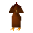

Rooster

| Config name | rooster |
| NPC id | 1018 |
| Combat level | 2 |
| Hitpoints | 7 |
| Attack / Strength / Defence | 2 / 2 / None |
| Options | Attack |
| Category | chicken |
| Wander range | 5 tiles from spawn |
| Max range | 7 tiles from spawn |
| Defined in | scripts/_unpack/244/all.npc |
| Bonuses | Attack bonus -20, Strength bonus -20, Stab def -42, Slash def -42, Crush def -42, Magic def -42, Range def -42 |
Rooster
He rules the...er...roost.
Show all 1 spawn on the world map → Open in knowledge graph →
Drops
Drop script: scripts/drop tables/scripts/chicken.rs2 (category handler _chicken)
Always dropped
| Item | Quantity | Rarity | Notes |
|---|---|---|---|
| 1 | Always | if npc_type = black_heather if inv_total(inv, trail_clue_medium_riddle001) > 0 if ~obj_gettotal(trail_clue_medium_riddle001_key) = 0 | |
| 1 | Always | if npc_type = guarddog if inv_total(inv, trail_clue_medium_riddle002) > 0 if ~obj_gettotal(trail_clue_medium_riddle002_key) = 0 | |
| 1 | Always | if npc_type = ardougne_guard if inv_total(inv, trail_clue_medium_riddle003) > 0 if ~obj_gettotal(trail_clue_medium_riddle003_key) = 0 | |
| 1 | Always | if npc_category = chicken if inv_total(inv, trail_clue_medium_riddle004) > 0 if ~obj_gettotal(trail_clue_medium_riddle004_key) = 0 | |
| 1 | Always | if compare(npc_name, "Man") = 0 if inv_total(inv, trail_clue_medium_riddle005) > 0 if ~obj_gettotal(trail_clue_medium_riddle005_key) = 0 | |
| 1 | Always |
Drop table
| Item | Quantity | Rarity | Notes |
|---|---|---|---|
| 15 | 1/4 (25%) | ||
| 5 | 1/4 (25%) |
Locations
| Area | Coordinates | Level | Count | Map |
|---|---|---|---|---|
| Death Plateau | 2816, 3560 | 0 | 1 | view |